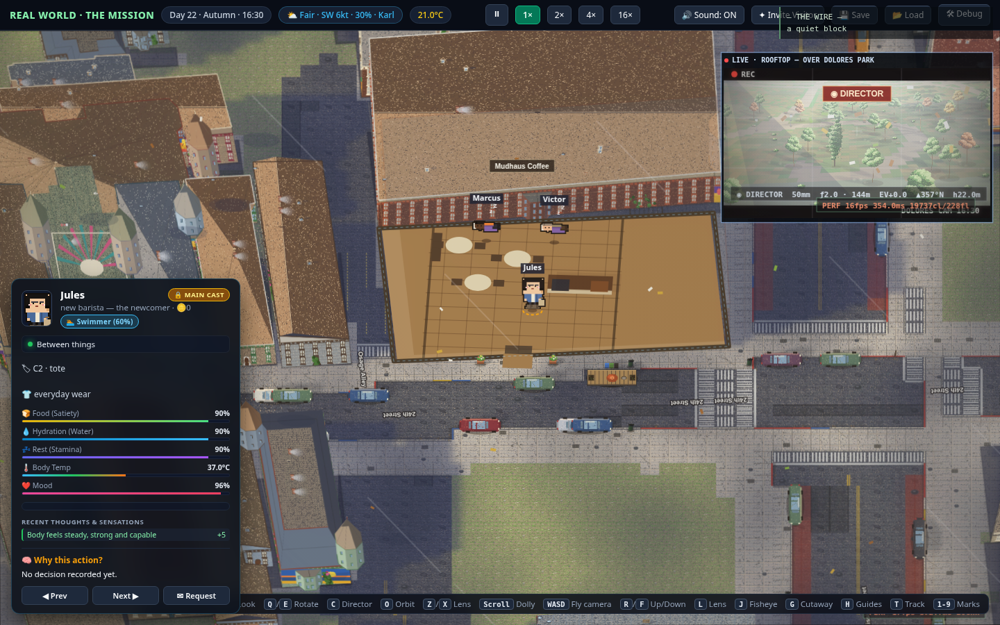

Watch the block.
This is the front door. One real San Francisco neighborhood, 28 fictional residents, running around the clock whether anyone tunes in or not. Open the spectator view and it’s just… on. Reach in when — and only when — you want to.
The spectator view
One window onto the neighborhood.

On this page today
- Labeled development captures cycling in the frame — always captioned, never passed off as live.
- Four camera presets you can already click — they drive the capture deck the way they’ll drive the live cameras.
- The real Wire below, running its built-in demo stream with the badge to prove it.
- A guided watch narrating what a spectator would be looking for.
- A Label the shot overlay that names what each capture proves — the inspector, names over heads, the Wire HUD. Every marker points at something you can verify in the frame.
- A Clip this frame button that exports the capture you’re looking at as a captioned PNG — “development capture” watermarked in, so anything you share carries its own honesty.
The day the build ships
- The same frame becomes the live world — one attribute flips it; the page itself doesn’t change.
- The same preset names move inside the live view itself — joined by free pan/zoom and a follow-cam that can sit on any resident.
- The same Wire drops its badge and shows the real feed, writes and all.
- The guided watch retires. Live needs no narration — and no script.
- The label overlay retires with it — the live HUD names its own surfaces.
- Clipping moves inside the live view — same button idea, real frames, same watermark honesty.
Reading the view
What’s on screen when the world is live.
The neighborhood
Street level or rooftop view of the block — real Mission District geography, parody storefronts, weather and light on the actual sun’s schedule. Residents go to work, cook, argue, nap. Nobody performs for the camera.
The public request feed
Every intervention any viewer files — approved, queued, expired, refunded — appears on a public feed with the requester’s name attached. Watching the feed is half the show: you see who is trying to do what, not just what happens.
The residents
Each of the 28 residents is a fictional person with a job, a lease, and an AI mind. Select anyone to see who they are — the spectator view is read-only by design. Reaching in is a separate, paid act.
The feed, previewed
What the request feed looks like.
A preview built from the feed’s real vocabulary — the event kinds and request statuses below are the ones the live feed uses. The entries themselves are illustrative; the real feed writes itself at launch, and quiet hours get reported as quiet hours.
Jules out for the morning run — north path loops.
Rush hour at Mudhaus — Reyes at double tempo, line to the door.
@okfm — possess own courier, 30 min. Requests run attributed, on the public feed.
Fog burned off over the park — full sun.
Mission Unfiltered posted: “The Salsa-Bar Ledger” — anonymous, as always.
@leaf — park cleanup event at Dolores Park. Queued first-come; if the slot never opens it auto-refunds.
@leaf’s slot opened — the cleanup is on, grabbers and bags out on the south lawn.
Admin action — venue window reset at The 600 Club. Affected requests compensated 90 cr, publicly.
@pru’s rooftop set approved with a shorter window — a reviewer can approve with edits, and the edit posts too.
A request didn’t pass screening — the feed shows the outcome, never the screened text. Credits returned in full.
A new filing is public the moment it’s declared — the feed posts requested before the screen has even answered.
A queued request expired before its slot opened — credits back automatically, logged in public.
A new resident joined the block — hired by a viewer, screened, signed a lease, moved into a real unit.
Quiet hours on the block. The feed says so instead of padding itself.
Kind and status labels are drawn verbatim from the feed schema (move · scene · venue · weather · request · admin · press · housing · cast · quiet; requests carry requested · in_review · approved · approved (modified) · running · queued · resolved · refunded · not approved · player session ended). Feed text stays surface-level: what a street camera could verify — no interiors, no thoughts, no secrets. Yesterday’s feed doesn’t scroll away — it settles into the Archive under the same ids.
Every status, public
The whole life of a request, on the record.
These aren’t our metaphors — they’re the feed’s own status labels, verbatim from its schema. A filing is public from the instant it’s declared; nothing about its path is private except the screened text itself. The happy path runs in a straight line — the side doors are where the honesty lives.
- requested
Declared and held — on the feed before the screen answers.
- in_review
Exclusives and gray zones wait on human eyes — no promised review time.
- approved
Cleared as filed — or approved (modified) when a reviewer trims it first.
- running
Live in the world — injected as an opportunity, never mind-control.
- resolved
Done, and the record stays — under your name, in the Archive.
Waiting on a first-come slot. If the slot never opens the request expires — and the next label is refunded, automatically.
The screen said no. The feed posts the outcome — never the screened text — and the credits come back in full.
The terminal state for anything that didn’t run — denial, expiry, a modified approval you declined. Always public, always automatic.
A possession of your own resident ends early when the viewer steps away — control hands back to that resident’s AI, and the feed logs the exit instead of hiding it.
Watch the vocabulary move: every row the simulator below files walks this same map — the tag steps through the real statuses, not a staged animation.
The interface, running
This is the actual Wire — not a mockup.
Below is the real spectator application, embedded and running on its built-in demo stream — the badge in its header tells you so, and it will still tell you so at launch when the same frame shows live data. Filter the feed, open a request thread, pin a resident, hit hold. Nothing here touches the world; the Wire is view-layer only.
Try it — a simulation
File a request. Watch the pipeline answer.
Nothing here is filed and no credits exist yet — this widget runs the request rules locally so you can feel the shape of the thing. The rates and classes are the real ones from the pricing page.
Pick an action, describe it, file it. The simulation classifies and screens the request the way the real pipeline does — declared upfront, intent-screened, priced by duration, attributed publicly on the feed. Try a request that targets someone, or touches a resident’s marriage — the screen answers the way the real one would.
Your simulated feed entries — watch each tag walk the real lifecycle
Would it air?
Call the screen yourself.
Seven requests, three verdicts each — the same calls the real pipeline makes. Every outcome below maps to an actual reason code in the screening taxonomy; nothing here was invented for the quiz. The shipped screen reads intent, not keywords — and gray zones go to a human.
For streams & overlays
Put the block on your stream.
One iframe is the whole embed — point it at this page and it shows the labeled capture fallback today, the live world the day the build ships. Same frame, no re-embed needed.
Placeholder domain — swap
realworld-game.example for the launch domain when it’s
chosen. Coverage rules for creators live in the
press kit.
Who you might see
Eight residents with standing routines — and twenty neighbors around them.
The mains below have jobs, leases, and habits you can learn to read. Chips lit usually out now follow each resident’s published routine — that’s the schedule talking, not a tracker on anyone’s position. Full profiles (minus their secrets — those stay sealed) live on the cast page.
Your first watch
A field card for the first hour.
Eleven things worth doing on a first visit — every one works today on this page’s real surfaces (the capture deck, the Wire’s demo stream, the simulator above). Checks save on this device only; nothing leaves your browser.
0 / 11
A day on the block
The world keeps its own hours.
The block runs on the real sun — light, weather, and routines follow the clock whether or not anyone is watching. The card lit below is where the block is right now — the schedule is real even before the feed is.
Fog first
Gray over the rooftops. Early shifts leave for work; the lights at Mudhaus come on before the sun does.
Lunch rush
Counter seats fill, somebody’s late for a shift, somebody else is very publicly not speaking to somebody.
Golden hour
Long shadows down the hill, decks and rooftops in use — the hour the block is most itself.
Windows dark
Sodium lamps on, The 600 Club winds down. The block sleeps — but it never pauses, and it’s still there at 4 a.m.
From viewer to resident
Watching is free forever. Reaching in is the upgrade.
Watch
This page. Free, always, no account — observation is the product’s free core, not a trial.
Request
File a time-boxed request — possess a resident, change the weather, trigger an event. Declared upfront, classified automatically, priced by the minute, attributed publicly on the feed.
Move in
Create a character and join the cast. New residents need real in-game housing and pay rent in game dollars like everyone else — no exemptions.